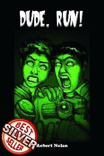
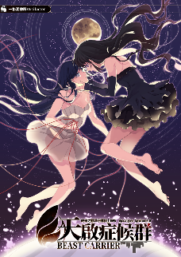
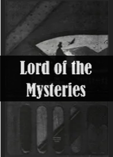
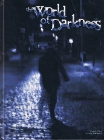

最新活動資訊
活動列表
| 歷屆活動總覽 (點擊活動名稱可查看詳情，歡迎大家點擊報名！) |
| 尋找你喜歡的活動吧！ |
| No. | 活動名稱 | 活動時間 | 截止報名時間 | 活動狀態 | 精彩回顧 |
|---|---|---|---|---|---|
| 20250927 | TRPG在新竹20250927期 | 20250927 | 20250926 | 已結束 | |
| 20250823 | 清交TRPG戰線20250823期 | 20250823 | 20250822 | 已結束 | |
| 20250802 | TRPG在新竹20250802期 | 20250802 | 20250801 | 已結束 | 點擊查看 |
| 20250628 | 🐉龘與地下城🐉專場活動20250628 | 20250628 | 20250627 | 已結束 | |
| 20250524 | TRPG在新竹20250524期 | 20250524 | 20250523 | 已結束 | 點擊查看 |
| 20250426 | 📢竹推餘波📢 龍與克蘇20250426 | 20250426 | 20250425 | 已結束 | |
| 20250329 | TRPG在新竹20250329期 | 20250329 | 20250328 | 已結束 | 點擊查看 |
| 20250118 | TRPG在新竹20250118期 | 20250118 | 20250117 | 已結束 | 點擊查看 |
| 20250117 | 華碩商務團 | 20250117 | 20250116 | 已結束 | |
| 20241123 | TRPG在新竹20241123期 | 20241123 | 20241122 | 已結束 | 點擊查看 |
| 20240928 | TRPG在新竹20240928期 | 20240928 | 20240927 | 已結束 | 點擊查看 |
| 20240727 | TRPG在新竹20240727期 | 20240727 | 20240726 | 已結束 | 點擊查看 |
| 20240706 | 📢竹推餘波📢 獵魔叛客20240706 | 20240706 | 20240705 | 已結束 | |
| 20240622 | 📢TRPG在新竹📢Paizo社群遊戲專場20240622 | 20240622 | 20240621 | 已結束 | 點擊查看 |
| 20240518 | TRPG在新竹20240518期 | 20240518 | 20240517 | 已結束 | 點擊查看 |
| 20240323 | TRPG在新竹20240323期 | 20240323 | 20240322 | 已結束 | 點擊查看 |
| 20231223 | TRPG在新竹20231223期 | 20231223 | 20231222 | 已結束 | 點擊查看 |
活動系統
| 歷屆活動系統 (如果您對那個系統感興趣可以聯絡我們，line群組和FB粉專皆可！) |
| No. | 系統名稱 | 書籍 | 介紹 |
|---|
| 1 | 獵魔士角色扮演遊戲 | 與電玩《巫師》系列和網飛影集《獵魔士》一樣，都是改編自安德烈．澤米科夫斯基的經典奇幻小說！玩家將來到充斥魔法、混沌與怪物的無名大陸，在北方諸國及尼弗迦德的衝突與陰謀中，殺出自己的生存道路！ 使用獨特的10面骰系統，你不但可以扮演小說的核心人物「獵魔士」，也能成為法師、戰士、醫生等不同職業，組隊一起獵殺怪物、捲入政治權謀和人性黑暗，並從中感受「兩害相權取其輕」的真實含意！ |
|
| 2 | 泡普克蘇魯 | 以美國恐怖文學作家H.P.洛夫克勞夫特的小說為基底，並由Chaosium出品的《克蘇魯的呼喚七版》，玩家所扮演的調查員將體驗到經典的「洛氏恐怖」，隨著故事進展、越深入真相而逐漸瘋狂……但比這更瘋狂的是，七版還推出了《泡普克蘇魯》擴充，讓每個調查員都能掛上強大的「英雄異才」。你不再是恐怖片裡只會逃跑尖叫的廢柴，而是能與異教徒和神話生物熱血拚搏、殺出重圍的強大英雄！ | |
| 3 | 龍與地下城五版 | 從1974年至今，即將邁入50周年的《龍與地下城》系列已經出到了第五版——這也是最知名且最受歡迎的版本，並成功幫助D&D回到桌上角色扮演遊戲龍頭的地位。《龍與地下城五版》憑藉著簡單易學好上手的特性，讓新手更容易入門、老手也能找到過去版本的醍醐味，更透過如電影《龍與地下城：盜賊榮耀》及遊戲《柏德之門3》等周邊產品，讓「被遺忘的國度」成為劍與魔法的另一代名詞！ | |
| 4 | 基礎版龍與地下城 | 你知道曾經在奇幻遊戲中，「精靈」「矮人」「半身人」是一種「職業」嗎？？不同的種族居然還有不同的等級限制！？這也太地獄了吧！其實，這個梗來自最早的DnD版本之一：《基礎版龍與地下城》。 作為初期雙向開發的古老版本之一，DnD B/X 其實也曾致力於「簡化」《龍與地下城》規則中長篇文章式的描述，把它們變得淺顯易懂的同時，也仍然十分貼近古早TRPG的戰棋風味！歡迎大家一起來看看40多年前遊戲宅的腦洞又是怎麼開！ |
|
| 5 | 尋路者一版 | 史上唯一曾經賣贏DnD的《尋路者一版》（Pathfinder 1E，或稱為PF、PF1E）是國外出版社Paizo自《龍與地下城3.5版》改良而來。用一句話說完Pathfinder的特色就是：你有超多的選擇，而且每個都又酷又強！無論是喜歡打架堆疊數值，還是喜歡靠嘴走天涯、用大魔法燃燒/拯救世界的玩家，都一定能從PF系統數以千萬計的組合中，找出一套最適合自己的遊戲套路。 | |
| 6 | 尋路者二版 | 就在Pathfinder出版整整10年後，Paizo正式推出了第二版，也就是俗稱PF2E的《尋路者二版》。除了接續格拉利昂「預言破滅之年（Year of the Lost Omen）」迷人的故事設定，二版不但有效的整合了最酷最常用的資源並予以簡化，更以獨樹一幟的「三動作」規則大幅度強化了戰鬥過程的精采度與操作性。目前《尋路者二版》也是全球遊玩人數僅次於《龍與地下城五版》的桌上角色扮演遊戲！ | |
| 7 | 跑啊，老兄！ |  | 不同於大部分TRPG以「玩家合作」為主的玩法，由羅伯特．諾蘭創作的《跑啊，老兄！》是一款「競爭」派對型桌上角色扮演遊戲。玩家扮演一群超自然調查實境秀的靈異專家，在節目中合作蒐集「靈異」「超自然」現象真實存在的證據，並設法爭取當集節目的MVP。與其他靈異調查遊戲的最大差別在於……所謂的「超自然現象」實際上可能並不存在於遊戲內的世界——但你們仍會有很多「證實」的機會！ |
| 8 | 夕色染空 | 不溫馨的事情我們不討論！由非主流向日系TRPG作者神谷涼所創作的《夕色染空》，是一個帶有魔幻色彩、沒有暴力的可愛日常小品。玩家將扮演「變化」——能夠變身成人類，並且會一點點神奇能力的小動物。身為小動物，想睡就睡想吃就吃，享受他人的寵愛耍耍任性，非常適合任何被苦悶生活壓迫的人，來到這個沒有廝殺、沒有惡意的系統療癒一下自己！ | |
| 9 | 電御叛客：紅色年代 | 作為知名桌上角色扮演遊戲《電御叛客》系列最新出版的作品，《電御叛客：紅色年代》設定於架空世界的2045年，並將承接至電玩遊戲《電御叛客2077》的時間線。玩家將進入這個由超級企業、幫派及電子義體構成的反烏托邦世界，或許掙扎於社會底層，或許淪為「大人物們」的棋子掙扎求生，努力在這個規則飄忽的新世界，為自己和身邊的伙伴找到一條生存之道。 | |
| 10 | 克蘇魯的呼喚七版 | 以美國恐怖文學作家H.P.洛夫克勞夫特的小說為基底，並由Chaosium出品的《克蘇魯的呼喚七版》，玩家所扮演的調查員將體驗到經典的「洛氏恐怖」——或許一開始只是一些非比尋常的徵兆或奇異事件，但隨著的隨著故事進展，由無以名狀的恐怖堆砌而成的「真相」，讓人的理性和認知逐漸崩潰、進而陷入瘋狂。這種通過調查而逐漸披露的恐怖體驗，便是CoC系統的一大特色！ | |
| 11 | 戰錘40K：黑色遠征 | 《戰錘40000》是由英國的遊戲公司遊戲工坊（GameWorkshop）出品的戰棋遊戲，中文俗稱為《戰錘40K》，這個能讓奇幻種族穿上動力盔甲、一邊發射脈衝槍一邊放黑魔法、同時融合科幻、恐怖與奇幻的獨特硬核風格，在全球各地都有眾多愛好者。而《黑色遠征》作為《戰錘40K》的子系統，玩家則要扮演一群信奉「混沌」黑暗諸神的神選混沌星際戰士，與宇宙天災：綠潮進行血戰！ | |
| 12 | 迴路奇譚 | 與Prime電視劇《迴路奇譚》同樣改編自賽門・史塔倫哈格 (Simon Stalenhag)同名圖像小說，遊戲背景建基於1980年代，玩家將扮演一群如《怪奇物語》、《外星人E.T.》情節中出現的歐美青少年冒險團，有的外向有的宅、搞不好還有一點怪脾氣，在嘮叨的父母、寫不完的作業等日復一日的生活中，跟著三五好友一起誤打誤撞地發現無聊日常中的陰暗真相……。 | |
| 13 | 是芥末日 | 由美國公司Fantasy Flight Games出品、以體驗各種末日情境為賣點的《是芥末日》（The End of the World）是一個相當追求「臨場感」的遊戲——甚至連玩家使用的角色都必須是【他們自己】，裝備也只能使用活動現場拿得到的東西！當你面對四種經典的世界末日情境：殭屍危機、古神降臨（克蘇魯神話成真）、外星人入侵及機械革命（魔鬼終結者）時，徹底享受到身臨其境的獨特體驗。 | |
| 14 | 天啟症候群2.0 Beast Carrier |  | 由台灣同人社團【一格洞神殿】出品、主打現代異能戰鬥的《天啟症候群》，主要描述一個經歷巨獸浩劫的末日世界，玩家將化身為守護人類的騎士們，保護著提供他們力量和援助、終將陷入沉睡的君主，在守護世界與重要之人間抉擇。儘管難逃悲傷的到來，依然要揣懷著勇氣面對，在分別的時刻前盡可能珍惜著相處時的點點滴滴。在2.0版本中，騎士們也有更多的構築選項——也可能面對更強大的敵人。 |
| 15 | 黯影深境 | 由奧術圖書館(The Arcane Library)出版、於2024年接連獲得三城獎(Three Castles Awards)及多項埃尼獎(ENNIE Awards)肯定的桌上角色扮演遊戲《暗影深境》，繼承了桌上角色扮演遊戲新作與老派的特點，更加快速、更容易上手……也更加的致命。舉起你的火把，匍匐前行的黑暗將重生於每個夜幕降臨。時間是1:1，危機是轉瞬降臨，準備好劍盾和神徽，從最致命的地下城取回你豐厚的獎勵吧！ | |
| 16 | 武林知心 | 由美國公司Fantasy 得不到回應的愛戀、矛盾的仁義道德、忠誠的友愛，種種的人在江湖身不由己，將角色拽入紅塵糾葛……但為了實現心中的俠情或大義，又必須奮力振作，故事因此高潮迭起！以上便是《武林知心》（Hearts of Wulin）這款武俠風格的角色扮演遊戲想要提供給玩家的感覺。採用啟示錄驅動（Powered by Apocalypse，即PbtA）系統，玩家將由六種經典的原型做出選擇，並與主持人一同建構出專屬於你們的熱血江湖！ | |
| 17 | 戰錘40K：死亡守望 | 由美國公司Fantasy 《戰錘40000》是由英國的遊戲公司遊戲工坊（Game Workshop）出品的戰棋遊戲，中文俗稱為《戰錘40K》，這個能讓奇幻種族穿上動力盔甲、一邊發射爆彈槍一邊釋放靈能、同時融合科幻、恐怖與奇幻的獨特硬核風格，在全球各地都有眾多愛好者。這次在竹推活動中，玩家將化身為人類最強悍的防衛力量之一「死亡守望」小隊，為了捍衛帝國而戰、為了帝皇而戰！ | |
| 18 | 雙重十字三版 | 與昨天相同的今天 與今天相同的明天 世界就像這樣，不停重複的時間，就像沒有任何變化一般 但是，在人們所不知道的地方 世界的面貌有了重大的改變 |
|
| 19 | 龍蛋物語 | 由日本設計師岡田篤宏創作的《龍蛋物語》，是一款以「旅行」為核心的溫和奇幻角色扮演遊戲。玩家將扮演旅者，一邊探索世界，一邊體驗日常中的冒險故事，強調角色之間的合作、成長以及與大自然和居民的互動。遊戲的機制相對簡單易懂，分為四種季節類型，並由獨特的「龍人」擔當敘事者級旅人的守護者，也是TRPG中少數的，「GM可以跟玩家一樣昇級、變強」的系統。 | |
| 20 | 幹片帝王 | 《幹片帝王》是一款重現B級片荒誕風格的TRPG，充滿低成本的特效與瞎雞巴亂寫的劇情。玩家可以組合各種經典的『角色原型』來創造人物，諸如「被詛咒的外送員」、「唯一看透真相的烹飪機器人」或是「曾是山道猴的戰鬥修女」等離奇設定。雖然主持人會設計基礎劇情，但你完全！可以利用『劇情反轉』機制瞎雞巴亂演！大腳怪看到你的毛腿愛上你？沒問題！武士刀砍斷散彈槍時發生了大爆炸？你很懂喔。 | |
| 21 | 替身大戰 | 由新手專機工作室（Rookie Jet Studio）發行的《替身大戰（Over Arms）》 ，是以熟悉如《JOJO的奇妙冒險》、《命運系列》（Fate/Stay Night及FGO等）、《通靈王》或《女神異聞錄》的玩家為主要客群的泛用系統，讓你能夠通過遊戲機制創造出與上述作品中相似的主題、人物、能力和各種設定。你的角色將擁有一個強大的「替身」，並通過它進行戰鬥，或完成其他光憑人類之力難以完成的事情！ | |
| 22 | 中古奇幻戰錘四版 | 《中古奇幻戰錘四版（ Warhammer Fantasy Roleplay，簡稱WFRP） 》雖然同樣是中古時代，劍與魔法風格的奇幻遊戲，卻設定在一個充滿陰鬱、黑暗與陰謀的氛圍中。強烈的哥特式風格的世界觀，充斥著戰爭、魔法、腐敗和邪惡的怪物。遊戲中玩家所扮演的角色，將探索這個危險四伏的世界，經歷冒險、生死決鬥所獲得的強大力量，也往往伴隨巨大的風險與墮落。 | |
| 23 | 命運快速版 | 由「邪惡帽製造（ Evil Hat Productions）」發行的泛用系統《命運快速版》（FATE Accelerated），其高度客製化與無限風格適應性，幾乎適用於各種故事類型。核心機制圍繞著「形象」（Aspect）、「命運點」（Fate Point）和「強迫」（Compelling），鼓勵玩家積極參與故事創作、推動劇情發展。《命運》系統沒有預設世界觀，允許 GM 和玩家共同創造設定，適合喜愛敘事驅動和角色扮演的玩家！ | |
| 24 | 陷落倫敦速玩版 | 距今四十年前的1861年，整座倫敦市忽然落入了一個深邃的地底洞窟；當塵埃落定之後，倖存的人們發現在倫敦的市中心，巍然聳立著一座佈滿尖刺的高塔！如今這裡已是另一個世界——地底洞窟「溺斯」。原本的倫敦居民現在必須與惡魔、智鼠人、活泥人等奇異的生物共處，死去的人們也像是中場休息一般，隨時可以再次起身走動。系統使用的是d6骰池，並且可能更多著重於戰鬥以外的各種活動。 | |
| 25 | 大槍女子漢 | 2027年，人類文明因為川普、普丁、習近平等男人的倒施逆行而崩潰，撒旦趁亂派出她的「地獄蝙蝠小瞎妹」（Batwinged Bimbos From Hell）佔領世間，準備將世界按她的樣貌重塑；為了阻止撒旦，教宗組織了「哈雷聖母修女會」（The Sisters of Our Lady of Harley-Davidson）——也就是傳說中的《大槍女子漢》（Macho Women with Guns）——與她們對抗，並在末日中消滅來自平行世界的威脅，以及有毒的男子氣概。 | |
| 26 | 詭祕之主 |  | 改編自爱潜水的乌贼於起点中文网發布的同名小說《诡秘之主》，這個系統保留了原作中最大的特色——同時融合克蘇魯風、西方魔幻與蒸氣龐克的奇異世界。這個粉絲向的同人系統也引用了原作中的「靈性」和「非凡者」等概念，並採用多種其他系統的遊戲機制，形成自己獨特的數值體系。 |
| 27 | 去他的龍和地下城 | 據說是主持人FM龍帶完某桃園以南苗栗以北的推廣會活動，結束時跟一群來參團的玩家瞎哈拉，不小心就一起想到的很酷的帶團的IDEA，而且當天還立刻就約跑起來了。出乎意料的是，這個臨時想出來的D20玩法運作起來居然十分順暢，為了確保這不是錯覺，趕緊讓他多帶幾次試試看！ | |
| 28 | 命運核心版 | 由「邪惡帽製造（ Evil Hat Productions）」發行的泛用系統《命運核心版》（FATE Core），其高度客製化與無限風格適應性，幾乎適用於各種故事類型。《命運》系統沒有預設世界觀， GM 和玩家可以共同創造設定，非常適合喜愛敘事驅動和角色扮演、喜歡讓創意在桌面上奔騰的玩家！ | |
| 29 | 尋路者二重製版 | 在威世智公司的「OGL之亂」後，促使Paizo也推出了自己的ORC（開放角色扮演遊戲創意憑證），而《尋路者二版重製版》便是此憑證的領頭羊。除了保留獨特的「三動作」機制，重製版也對《尋路者二版》的平衡性跟系統規則做出調整，一面擺脫OGL的束縛，一邊向玩家展示格拉利昂的全新面貌！ | |
| 30 | 黑暗世界 |  | 由美國出版商白狼（White Wolf Publishing）出品的《黑暗世界》，以標誌性的「哥德龐克」恐怖風格聞名。一般來說，本作的「凡人模板」均為沒有超自然力量的普通人，並專注在人性與無力感；但這次將套用《Mirrors》規則集，將凡人變為動作英雄、超能力者，創造更超現實的凡人冒險體驗。 |